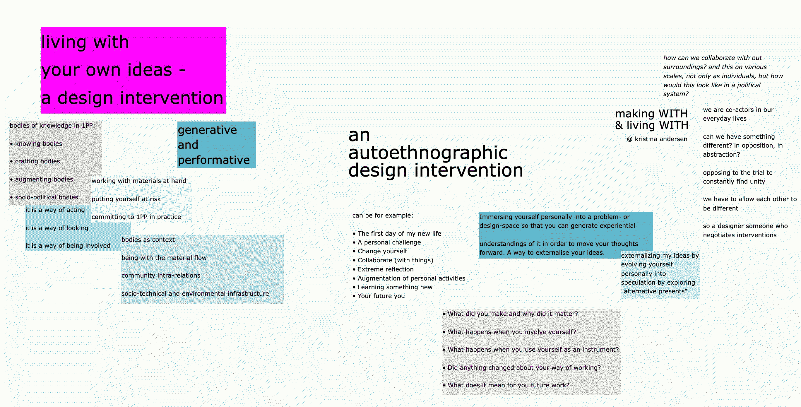
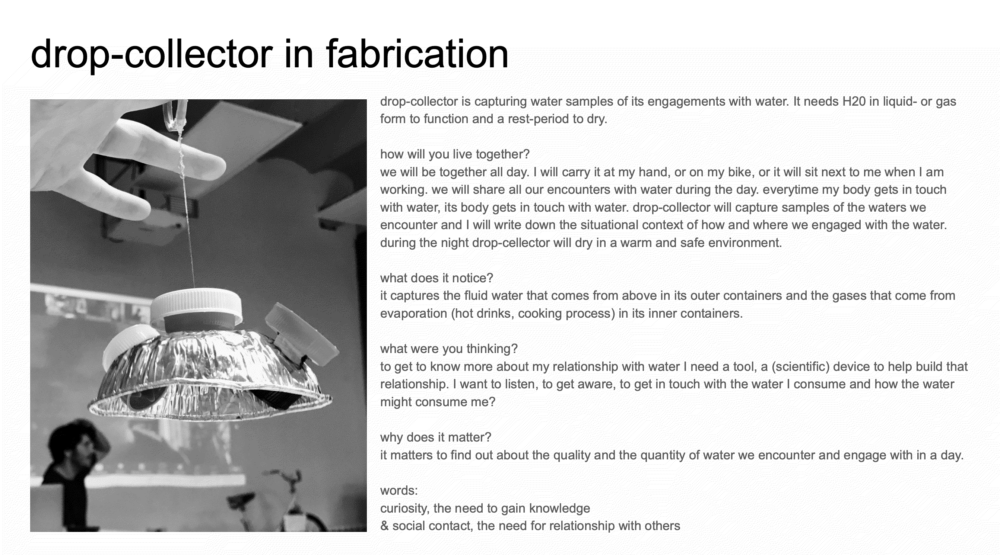
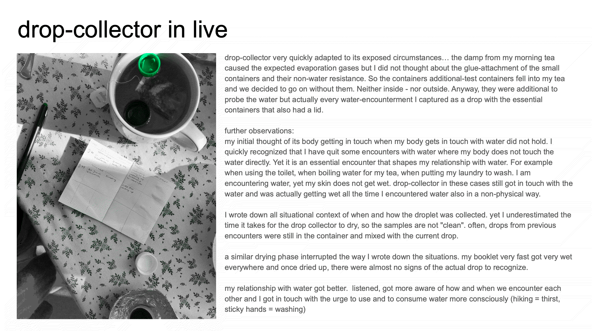
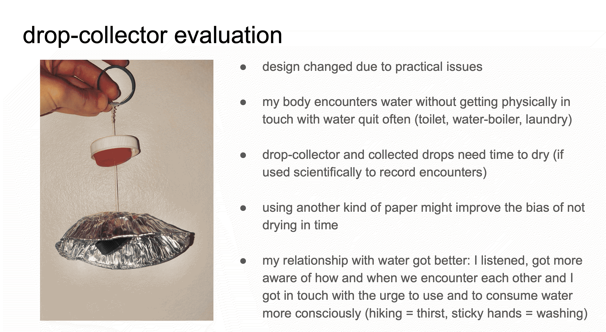
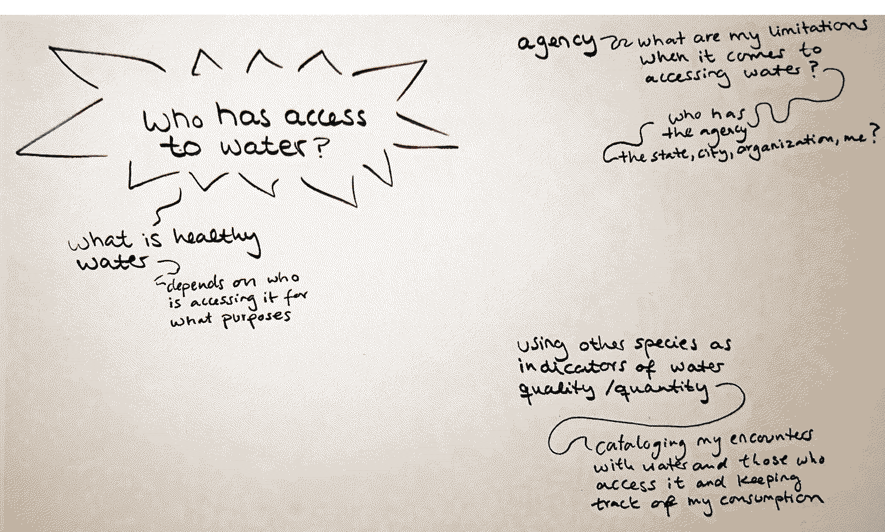

¶
🗓 Week 5 / 1 - 5 November 2022
living with your own ideas¶
with Oscar Tomico, Kristina Andersen and Angela Mackey
this course is aimed to learn how to quickly embody concepts, and address them through lived experiences. we will engage in making processes and experiences our fields of research through our bodies. instead of only speculating, we will realize concepts at their very start and see how this might bring them further.

companionship¶
learning from each other.
with Oscar Tomico and Kristina Andersen
during the first exercise we quickly prototyped a magic machine and defined its needs and purposes. then we took it with us for the next day to see how we could decenter our own experience through the awareness of a more-than-human companion…



autoethnographic design intervention¶
with Oscar Tomico and Angela Mackey
embodying questions.
as a second exercise we defined our research challenge more precisely and thought about how we could live according to our field of interest for the following 24 hours. again, this is a fast-scaling, fast-thinking method that teaches us the benefits(?) of embodied ideation design. I want to know what it is like to access water as a non-human habitant of this city.

What did you make? And why did it matter?¶
water is a renewable resource on a global scale but on a local scale one will experience the results of changing climatological conditions, the uneven concentration of the population, economic activities, and the restricted access to water. therefore, it can happen that even in an area that is water rich, water scarcity occurs.
the availability of water depends not only on the quantity of water, but also on its quality: human activities (industry, fertilization, cosmetics…) pollute the water, which must be treated in different stages. therefore, the effective net water decreases with each successive treatment cycle. in addition, the question of quality must consider its perspective. water that is treated to be healthy for humans can be toxic for other living beings, while the natural life present in untreated water can cause health problems in humans. in Barcelona, it rains 600l/m2 per year. but only one third of the city has permeable surfaces, two thirds are covered with asphalt, which means that the rainwater cannot enter the soil and the natural reservoirs below but evaporates or flows directly into the anthropocentric canal systems and their various treatment plants. there seems to be more water healthy to humans than healthy to other living organisms inhabiting the city. every day, 800 m2 of used and treated water, which in turn has been filtered to make it healthy for nature, flows back through the Canal de Bunyola into nature and into the sea, outside of the city. I wonder how urban environments are integrated into natural water cycles and envision a city where human water and natural water enrich each other.
on average, a Barcelonian consumes 122 liter of water a day. this refers to water that has been collected from the rain and underground reservoirs and treated in various ways to make it accessible to humans, which means that it is “healthy” for humans to drink, but from nature’s point of view it could be defined as dead or even poisoned. so, the question I ask is: which inhabitants have access to water in a city and for whom is this water “healthy”?
as a presentation of our experience, we had to fast-edit a one minute video to bring to class the following day…
further reflections¶
What happens when you involve yourself?
involving myself into this quest, I tried to live as a non-human inhabitant of Barcelona, drawing water exclusively from publicly accessible sources, without being able to cause the flow of water myself. I tried to be aware and conscious about with whom I am sharing these waters.
What happens when you use yourself as an instrument?
using myself as an instrument, I found that it is not easy to deviate from an anthropocentric perspective when living in a system, an environment, that is primarily designed for humans. my senses are not trained to recognize the need for water, let alone the techniques that non-human organisms use to get water. what I mainly observed were birds picking in the wet soil around the wells after humans had used the water and left traces. I also see the huge trees that are not set in tiles or asphalt, and flowering plants that are twice the size of the pots they are in.
Did anything change about your way of working?
I think that involving myself has led to more questions than answers, which is generally what I want from a research practice. therefore, the technique has enriched my practice and I am sure that I will benefit from it in many ways. I feel it helps to get out of a mode of active thinking and explore a practice-oriented approach towards asking questions when trying to observe an environment from a unknown perspective.
What does it mean for your future work?
I am not sure yet how and when I will integrate this technique into my current research.